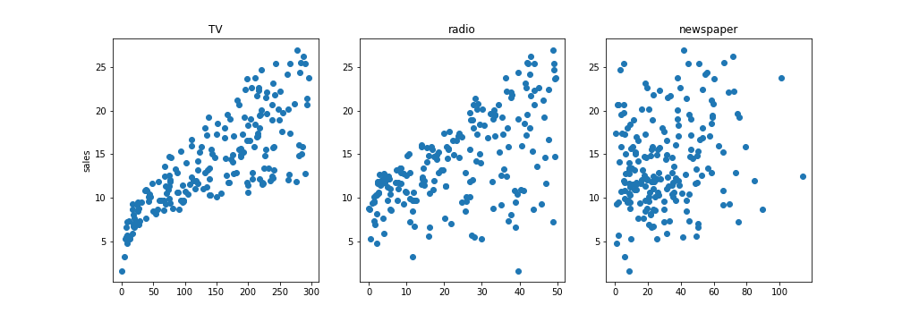

Read Chapter 1: Hands-On Machine Learning with Scikit-Learn, Keras, and TensorFlow, 3rd Edition
Let's start with an example
- Suppose you are a marketing analyst
- investigate the association between advertising and sales of a particular product
- data set consists of the sales of that product in 200 different markets
- Your client can control the advertising expenditure in each of the three media
- advertising budgets: TV, radio, newspaper

- Advertising budgets are input variables while sales is an output variable is an output variable
- inputs: predictors, independent variables, features $\rightarrow X$
- outputs: response, target, dependent variables$\rightarrow Y$
- Suppose we observe $Y$ and $p$ different predictors, $X_1,X_2,...,X_p$
- Assume that there is some relationship between $Y$ and $X = (X_1,X2,...,X_p)$, which can be written
in the very general form: $Y=f(X)+\epsilon$
- $f$ is some fixed but unknown function of $X$, and $\epsilon$ is a random
error term, which is independent of $X$ and has mean zero
- $f$ represents the systematic information that $X$ provides about $Y$
- Consider the difference:
- $\text{Income} =f(\text{education})+\epsilon$
- $\text{Income in \$} =f(\text{Income in €})+\epsilon$
There are two main reasons: prediction and inference
Let's focus on prediction first
- In many situations,$X$ are readily available, but $Y$ cannot be easily obtained
- Given the error term averages to zero, predict $Y$ using $\hat{Y}=\hat{f}(X)$
- $\hat{f}$ represents our estimate for $f$
- often treated as a black box
Reducible error: how to improve $\hat{f}$
Irreducible error: $\epsilon$
because no matter how well we estimate $f$, we
cannot reduce the error introduced by $\epsilon$
Why is the irreducible error larger than zero?
The focus of the most data analysis is on techniques for estimating $f$ with the aim of
minimizing the reducible error
- We are often interested in understanding the association between $Y$ and $X$
- Still, we wish to estimate $f$, but our goal is not necessarily to make predictions for $Y$
- Now $\hat{f}$ cannot be treated as a black box, because we need to know its exact form
- Which media are associated with sales?
- Which media generate the biggest boost in sales?
Some modeling could be conducted both for prediction and inference
Depending on whether our ultimate goal is prediction, inference, or a
combination of the two, different methods for estimating $f$ may be appropriate
Simple model vs. Complex model
The Trade-Off Between
Prediction Accuracy and Model Interpretability
Why would we ever choose to use a more restrictive method instead of a very flexible approach?
- If we are mainly interested in inference, then restrictive (simple) models are much more interpretable
- Still, we wish to estimate $f$, but our goal is not necessarily to make predictions for $Y$
- Flexible model would produce more accurate estimates but difficult to understand
In some settings, however, we are only interested in prediction, and
the interpretability of the predictive model is simply not of interest
However, we will often obtain more accurate predictions using a less flexible method
One of the key aims of this class is to introduce a wide range
of learning methods that extend far beyond the standard linear
regression approach
No one method dominates all others over all possible data sets
Selecting the best approach can be one of the most challenging parts of performing statistical learning in
practice
Assessing Model Accuracy
- Measuring a quality of fit depends on the model
- In the regression setting, the mean squared error (MSE)
- $\text{MSE}=\frac{1}{n}\sum_{i=1}^{n}(y_i-\hat{f}(x_i) )^2$
- The MSE will be small if the predicted responses are very close to the true responses
We are interested in the accuracy of the predictions that we obtain when we apply our method to previously unseen data
- Suppose fit the model using the training obs {$(x_1,y_1),...,(x_n,y_n)$} and obtatin $\hat{f}$
- Really not interested in whether $\hat{f}(x_i) \approx y_i$
- Instead, $\hat{f}(x_0) \approx y_0$, where $(x_0,y_0)$ is a previously unseen test observation not used to train
the statistical learning method
- We want to choose the method that gives the lowest test MSE, as opposed to the lowest training MSE
How can we go about trying to select a method that minimizes the test MSE?
In some settings, we may have a test data set available, so choose the model having the lowest test MSE
But what if no test observations are available?
How about: select a method
that minimizes the training MSE?
It might be a sensible approach, since the training MSE and the test MSE appear to be closely related
Unfortunately, there
is no guarantee that
the method with the lowest training MSE
will also
have the lowest test MSE